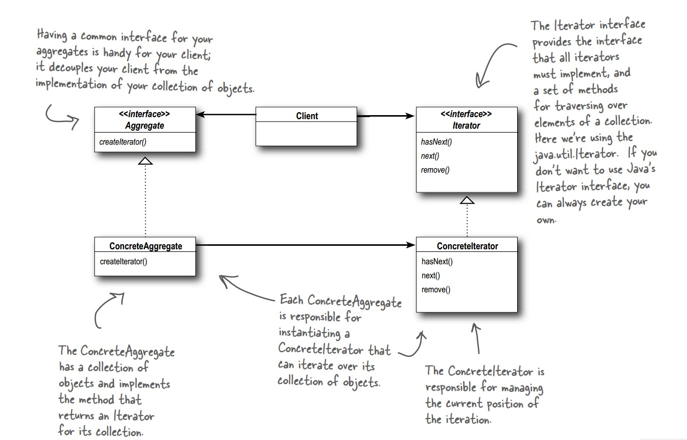

什么是迭代器模式？(What)
所谓迭代器模式，就是提供一种【顺序访问】【聚合对象】中的每一个元素且不暴露该聚合对象的内部数据结构的【方法】。
模式类图：

角色划分：
- 迭代器(Iterator)：定义访问和遍历元素的接口；
- 迭代器具体实现者(ArrayIterator、SetIterator)：具体实现迭代器接口，并要记录遍历中的【当前位置】；
- 聚合对象(Iterable)：提供创建返回【迭代器角色】的接口；
- 聚合对象实现者(Aggregate)：具体实现【迭代器角色】的创建；
- 客户端(Client)：需要遍历聚合对象的使用者！
代码实现：
聚合对象类Aggregate：
1 2 3 4 5 6 7 8 9 10 11 12 13 14 15 16 17 18 19 20 21 22 23 24 25 26 27 28 29 30 31 32 33 34
| import java.util.HashSet; import java.util.Set; public class Aggregate implements Iterable<Integer> { private int[] items; // 外部不可访问，数据类型为int public Aggregate() { items = new int[10]; for (int i = 0; i < items.length; i++) { // 填充内部数据，为了演示此处写死 items[i] = i; } } public Iterator iterator() { // 创建迭代对象，此处其实可以使用工厂方法返回对应的迭代器 return new ArrayIterator(items); } */ private Set items; public Aggregate() { items = new HashSet(); for (int i = 0; i < 10; i++) { items.add(i); } } public Iterator iterator() { return new SetIterator(items); } }
|
Iterable接口：主要为了让Iterator类支持泛型，便于扩展
1 2 3 4 5
| public interface Iterable<T> { Iterator<T> iterator(); }
|
Iterator接口：
1 2 3 4 5 6 7
| public interface Iterator<T> { boolean hasNext(); T next(); }
|
Iterator接口实现类ArrayIterator：
1 2 3 4 5 6 7 8 9 10 11 12 13 14 15 16 17 18
| public class ArrayIterator implements Iterator<Integer> { private int[] items; private int position = 0; public ArrayIterator(int[] items) { this.items = items; } public boolean hasNext() { return position < items.length; } public Integer next() { return items[position++]; } }
|
Iterator接口实现类SetIterator：
1 2 3 4 5 6 7 8 9 10 11 12 13 14 15 16 17 18 19 20 21
| import java.util.Set; public class SetIterator implements Iterator<Integer> { private Set<Integer> items; private java.util.Iterator it; public SetIterator(Set items) { this.items = items; this.it = items.iterator(); } public boolean hasNext() { return it.hasNext(); } public Integer next() { return (Integer) it.next(); } }
|
客户端类Client：
1 2 3 4 5 6 7 8 9 10 11 12 13
| public class Client { public static void main(String[] args) { Aggregate aggregate = new Aggregate(); Iterator it = aggregate.iterator(); while (it.hasNext()) { System.out.println(it.next()); } } }
|
输出结果：
使用JDK中的迭代器来简化该模式的代码开发：
聚合对象类：
1 2 3 4 5 6 7 8 9 10 11 12 13 14 15 16 17 18
| import java.util.Iterator; public class Aggregate2 implements Iterable<Integer> { private int[] items; public Aggregate2() { items = new int[10]; for (int i = 0; i < items.length; i++) { items[i] = i; } } public Iterator<Integer> iterator() { return new ConcreteIterator2(items); } }
|
自定义的迭代器类：
1 2 3 4 5 6 7 8 9 10 11 12 13 14 15 16 17 18 19 20 21 22 23
| import java.util.Iterator; public class ConcreteIterator2 implements Iterator<Integer> { private int[] items; private int position = 0; public ConcreteIterator2(int[] items) { this.items = items; } public boolean hasNext() { return position < items.length; } public Integer next() { return items[position++]; } public void remove() { } }
|
客户端类：
1 2 3 4 5 6 7 8 9 10
| public class Client2 { public static void main(String[] args) { Aggregate2 aggregate2 = new Aggregate2(); for (int item : aggregate2) { System.out.println(item); } } }
|
运行结果如下：
为什么要使用建造者模式？(Why)
对于使用方（客户端）来说，我并不想关心数据方（聚合对象）的内部数据结构，但是数据方的内部数据结构变了后，不能影响到我的（使用方）的正常使用。
聚合对象类：
1 2 3 4 5 6 7 8 9 10 11 12 13 14 15 16 17 18 19 20 21 22 23 24 25 26
| import java.util.HashSet; import java.util.Set; public class Aggregate3 { public int[] items; public Aggregate3() { items = new int[10]; for (int i = 0; i < items.length; i++) { items[i] = i; } } */ public Set items; public Aggregate3() { items = new HashSet(); for (int i = 0; i < 10; i++) { items.add(i); } } }
|
客户端类：
1 2 3 4 5 6 7 8 9 10 11 12 13 14 15 16 17 18 19 20 21 22 23 24 25
| import java.util.Iterator; import java.util.Set; public class Client3 { public static void main(String[] args) { Aggregate3 aggregate3 = new Aggregate3(); int[] arr = aggregate3.items; // 此处必须知道aggregate3的内部数据结构为数组，以便使用for()遍历 for (int item : arr) { System.out.println(item); } */ Set s = aggregate3.items; Iterator it = s.iterator(); while (it.hasNext()) { System.out.println(it.next()); } } }
|
什么场景下使用迭代器模式？(Where-When)
- 希望在不暴露集合对象的内部结构的前提下， 访问集合元素。
- 希望支持多种对于集合对象的遍历方式
- 希望为遍历不同的的集合对象提供一个统一的接口
填空题：在不改动【客户端使用】的情况下， 实现【聚合对象内部数据结构变更】的扩展！
FAQ